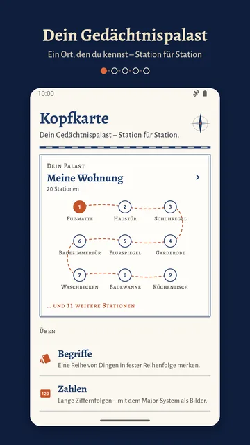
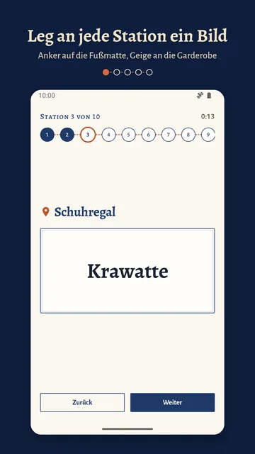
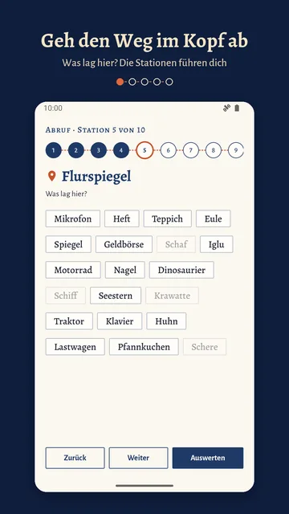
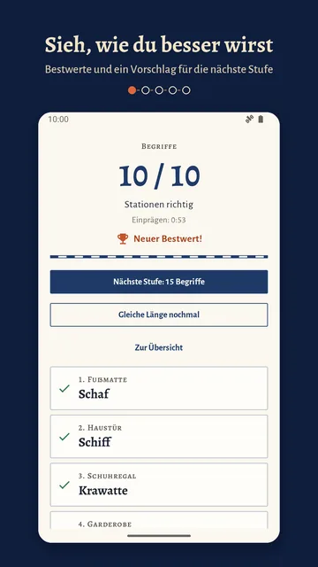
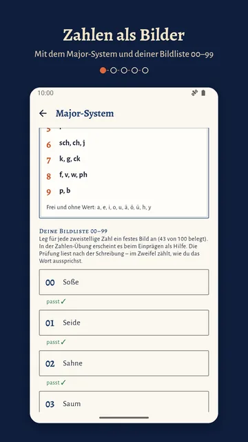
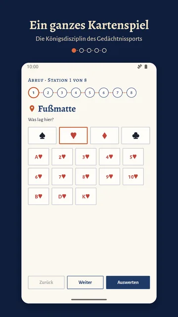
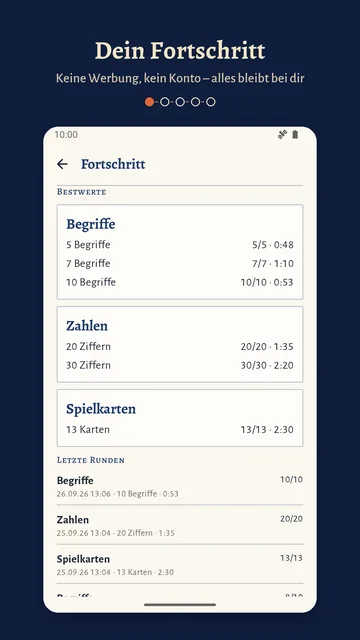

Begriffe
Merk dir eine Reihe von Dingen in fester Reihenfolge – alle gut vorstellbar, vom Anker bis zur Zitrone. 380 Begriffe stecken in der App.
Gedächtnistraining mit der Loci-Methode
Dein Gedächtnispalast – Station für Station. Du wählst einen Ort, den du im Schlaf kennst, legst an jede Station ein Bild und gehst den Weg später im Kopf noch einmal ab.
Erscheint bald bei Google PlayKopfkarte ist gerade im geschlossenen Test.
Für Android-Handys und -Tablets, auf Deutsch und Englisch.
So sieht ein Palast in Kopfkarte aus: ein Ort, den du kennst, mit Stationen in fester Reihenfolge. In der App legst du an jede Station ein Bild und gehst den Weg danach im Kopf noch einmal ab.
Du wählst einen Ort, den du im Schlaf kennst – deine Wohnung, deinen Schulweg – und schreibst seine Stationen in fester Reihenfolge auf: Fußmatte, Haustür, Garderobe …
An jede Station legst du ein Bild: Der Anker liegt auf der Fußmatte, die Geige hängt an der Garderobe. Im eigenen Tempo mit Stoppuhr oder fest getaktet.
Du gehst den Weg im Kopf noch einmal ab: „Was lag hier?“ Du tippst die Antwort an – bei Begriffen zwischen gleich vielen Ablenkern, damit es ehrlich bleibt.
Merk dir eine Reihe von Dingen in fester Reihenfolge – alle gut vorstellbar, vom Anker bis zur Zitrone. 380 Begriffe stecken in der App.
Lange Ziffernfolgen, verwandelt in Bilder mit dem Major-System. Mit Merktafel und deiner eigenen Bildliste 00–99, die prüft, ob dein Wort zur Zahl passt.
Einkaufszettel, die Gliederung eines Referats, die Planeten, Vokabeln – du übst sie auf deinem Palast wie die anderen Übungen.
Die Reihenfolge eines gemischten Blatts, die Königsdisziplin des Gedächtnissports. Beim Abruf wählst du erst die Farbe, dann den Wert.
Dazu: Bestwerte je Länge mit Einprägezeit, ein Verlauf der letzten Runden und ein Vorschlag für die nächste Stufe. Für lange Runden brauchst du viele Stationen – 52 tragen ein ganzes Kartenspiel.







Die Loci-Methode ist über zweitausend Jahre alt. Cicero erzählt vom Dichter Simonides: Nach dem Einsturz eines Festsaals konnte er die Toten benennen, weil er sich gemerkt hatte, wo jeder gesessen hatte. Daraus leitet Cicero die Regel ab: Orte in fester Ordnung, an die man Bilder legt.1
Auch heute arbeiten Gedächtnissportler mit Orten. Eine Studie mit Teilnehmenden an Wettbewerben wie der Gedächtnis-Weltmeisterschaft fand: Ihre Leistung beruhte nicht auf außergewöhnlicher Intelligenz oder anders gebauten Gehirnen, sondern auf einer räumlichen Merkstrategie.2
Kopfkarte verspricht dir kein besseres Gedächtnis. Sie gibt dir einen Ort zum Üben und zeigt ehrlich, wie viele Stationen richtig waren.
Du hast vom Gedächtnispalast gehört und willst wissen, wie er sich anfühlt. Fang mit dem Beispielpalast und fünf Begriffen an.
Die Gliederung eines Referats, eine Reihe von Fachbegriffen, Vokabeln: Leg sie als eigene Liste an und geh sie auf deinem Palast durch.
Zahlen mit dem Major-System und eigener Bildliste, ein ganzes Kartenspiel, Bestwerte mit Zeit – zum Trainieren, Runde für Runde.
0 €
Deine Paläste, Listen und Ergebnisse bleiben auf deinem Gerät.
Kopfkarte ist noch im geschlossenen Test und erscheint bald bei Google Play. Stand Oktober 2026. Verbindlich ist der Preis, den Google Play beim Kauf anzeigt.
Die App ist gerade im geschlossenen Test bei Google Play. Sobald sie für alle erscheint, steht hier der Link zum Store-Eintrag.
Nein. Paläste, Begriffe und Übungen stecken in der App und auf deinem Gerät.
Nein, Kopfkarte gibt es nur für Android: für Handys und Tablets.
Keine Registrierung, kein Konto, keine Werbung, keine Tracker. Deine Paläste, Listen und Ergebnisse bleiben auf deinem Gerät. Die Einzelheiten stehen in der Datenschutzerklärung.
Nicht, wenn die Android-Sicherung oder die Datenübertragung beim Gerätewechsel eingeschaltet ist: Paläste, Listen, Bildliste und Verlauf gehen dann mit.
Nein. Du fängst mit fünf Begriffen an; nach jeder Runde schlägt die App eine passende Länge vor – eine Stufe länger, wenn alles saß, eine kürzer, wenn weniger als 60 Prozent stimmten.
Deutsch und Englisch. Die Sprache stellst du in den Einstellungen um; die Begriffe und das Major-System gibt es in beiden Sprachen.
Schreib uns an kontakt@wunderkammer-apps.de.
Kopfkarte erscheint bald bei Google Play.
Erscheint bald bei Google PlayZur Einführung kostenlos, ohne Werbung, ohne Konto.